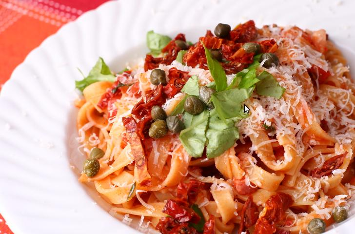

Ground Beef Stroganoff Noodles

Description
Full of flavor and easy to make, this one pan wonder is sure to
delight the family.
Takes only 40 mins total to make.
Ingredients
- 1 tablespoon unsalted butter
- 1 tablespoon vegetable oil
- 1 cup thinly sliced mushrooms
- 1 teaspoon salt, plus more to taste
- ½ cup diced onion
- 1 pound ground beef
- 2 tablespoons vodka
- 2 ½ cups egg noodles
Steps
- Melt butter and oil in a skillet over medium-high heat.
- Add mushrooms, season with salt, and saute, stirring occasionally, until they turn golden brown, 5 to 10
minutes.
- Stir in minced garlic and flour, and cook for 1 minute.